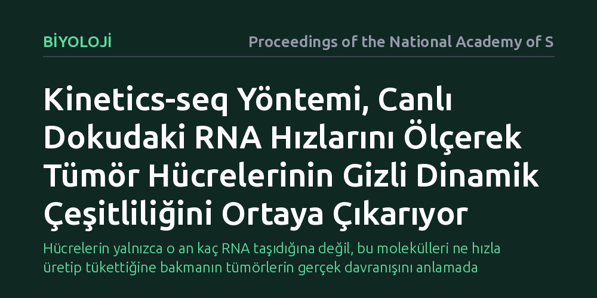

BIYOLOJI · Proceedings of the National Academy of Sciences · 2026-10-08
Araştırmacılar, canlı dokuda tek hücre düzeyinde RNA üretim ve yıkım hızlarını doğrudan ölçebilen Kinetics-seq yöntemini geliştirdi. Bu yöntem, geleneksel tek hücre dizilemenin yakalayamadığı moleküler kinetiği haritalayarak tümör hücreleri arasındaki gizli dinamik çeşitliliği ortaya koydu.
Hücrelerin yalnızca o an kaç RNA taşıdığına değil, bu molekülleri ne hızla üretip tükettiğine bakmanın tümörlerin gerçek davranışını anlamada belirleyici olduğunu gösteriyor.

Biyolojide bir hücrenin ne yaptığını anlamanın temel yolu, hangi genleri ne kadar çalıştırdığını incelemektir. Son yıllarda yaygınlaşan tek hücre RNA dizileme teknolojileri, binlerce hücreyi tek tek ayırıp içlerindeki haberci RNA moleküllerini saymamızı sağladı. Ancak bu yaklaşımın çok temel bir eksiği vardı: Hücreyi parçalayıp incelediğinizde elinize yalnızca anlık bir dondurulmuş görüntü geçiyordu. Havuzda kaç litre su olduğunu görüyordunuz ama musluğun ne kadar açık olduğunu ya da giderden ne kadar su kaçtığını bilemiyordunuz.
Bir hücrede belirli bir genin RNA miktarının yüksek olması, o genin harıl harıl üretildiği anlamına gelebileceği gibi, üretimin çoktan durduğu ancak eski moleküllerin henüz parçalanmadığı anlamına da gelebilir. Özellikle tümörler gibi sürekli değişen ve farklı hücre tiplerini barındıran karmaşık dokularda bu ayrımı yapamamak büyük bir kör nokta yaratıyordu. Yazarların belirttiği gibi, geleneksel yöntemler yalnızca "durağan transkript seviyelerini" yakalayabildiği için hücrelerin doku içindeki anlık tepkileri ve gelecekteki yönelimleri gizli kalıyordu.
Araştırmacılar bu kör noktayı aşmak için Kinetics-seq adını verdikleri yeni bir deneysel protokol geliştirdi. Yöntemin temelinde metabolik işaretleme tekniği yer alıyor. Canlı organizmaya hücrelerin yapı taşlarına benzeyen özel bir molekül verildiğinde, hücre yeni RNA üretirken bu molekülü yapısına katıyor. Ardından uygulanan kimyasal bir işlemle, yalnızca yeni üretilen bu RNA'lar dizileme sırasında ayırt edilebilir özel kimyasal izler bırakıyor.
Böylece tek bir hücrenin içindeki RNA'lar ikiye ayrılıyor: Deney süresince taze üretilenler ve deneyden önce zaten var olan eski moleküller. Araştırmacılar bu veriyi tek hücre dizileme verisiyle ve matematiksel oran modelleriyle birleştirerek, her bir gen için hem sentezlenme hızını hem de parçalanma hızını ayrı ayrı hesaplamayı başardı. Üstelik bu işlem laboratuvar kaplarında değil, doğrudan canlı doku ortamında gerçekleştirildi.
Ekip yöntemi tümör modelleri üzerinde test ettiğinde dikkat çekici bir tabloyla karşılaştı. Standart tek hücre analizlerine bakıldığında birbirinin tıpatıp aynısı gibi duran ve aynı gen miktarını taşıyan tümör hücrelerinin, aslında bambaşka kinetik profillere sahip olduğu görüldü. Bir grup hücre belirli bir moleküler yolu hızlı üretim ve hızlı tüketim dengesiyle ayakta tutarken, hemen yanındaki bir diğer grup aynı seviyeyi düşük üretim ve yavaş yıkım sayesinde koruyordu.
Bu kinetik ayrım, tümörün içindeki hücrelerin strese, ilaçlara ya da bağışıklık sistemi baskısına vereceği tepkilerin de farklı olabileceğini gösteriyor. Yalnızca toplam RNA miktarına odaklanıldığında gizli kalan bu dinamik çeşitlilik, tümör dokusunun neden homojen bir kitle olmadığını ve bazı hücrelerin tedaviden nasıl kaçabildiğini anlamak için yeni ipuçları sunuyor.
Bu çalışma, gen ifadesi analizlerini durağan bir envanter sayımından dinamik bir süreç takibine dönüştürme yolunda pratik bir yöntem öneriyor. Canlı doku şartlarında RNA döngüsünü doğrudan ölçebilmek, gelişim biyolojisinden immünolojiye kadar birçok alanda hücre kaderi kararlarını daha net görmeyi sağlayabilir. Hücrenin anlık durumu ile bir sonraki hamlesi arasındaki köprü, RNA üretim ve tüketim hızlarının dengesinde kuruluyor.
Yine de yöntemin hemen her klinik senaryoya doğrudan uygulanabileceğini düşünmemek gerekir. Canlı organizmaya kimyasal etiket verilmesi, dokuların hassas şekilde izole edilmesi ve karmaşık matematiksel modellerin kullanılması yöntemin teknik zorluklarını artırıyor. Ancak elde edilen bulgular, kanser araştırmalarında hücrelerin sadece neye benzediğini değil, ne hızla dönüştüğünü incelemenin önemini ortaya koyuyor.